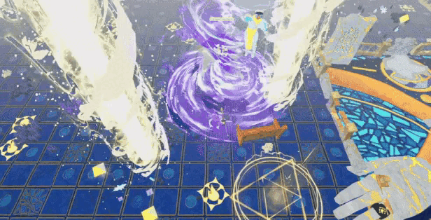
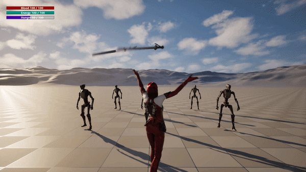

Dungeons of Mytheras
Extraction looter RPG en Unity 6 con combate a melee/arco, magia, stamina, UI, inventario y personajes modulares. Disponible desde navegador en Itch.io.
Juan García Serrano / Velard
Desarrollo sistemas jugables, combate, UI, personajes modulares y entornos low-poly para videojuegos de acción RPG y fantasía oscura.
Extraction looter RPG en Unity 6 con combate a melee/arco, magia, stamina, UI, inventario y personajes modulares. Disponible desde navegador en Itch.io.

Colaboración directa con modelos de personaje, texturas, props y animaciones para Realms of Wilorth de Reckless Monster Studios. Enlace directo a la Demo en Steam.

Prototipo de RPG de acción neon-noir en Unreal Engine 5 y C++, ambientado en un futuro de vampiros, cyborgs y megacorporaciones, con sistemas modulares de combate, recursos y poderes vampíricos.

Brawler arcade desarrollado en Unity con recogida de objetos, sistema de stun por raycast y gameplay rápido. (Todavía en fase de prototipado)
Soy desarrollador Unity y game designer, con un perfil híbrido entre programación, diseño de sistemas y arte 3D. Me especializo en crear prototipos jugables, sistemas de combate, personajes y entornos low-poly para videojuegos de fantasía oscura.
Email: velardgames@gmail.com
LinkedIn · ArtStation · GitHub · Itch.io